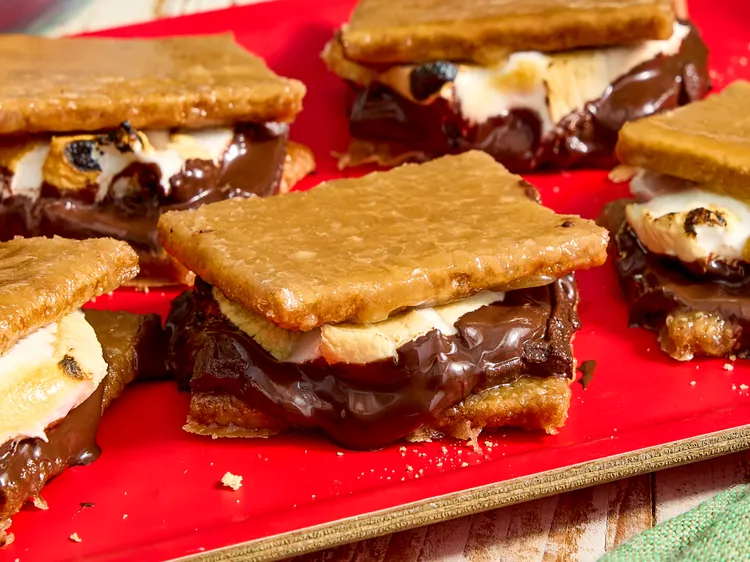

Million Dollar S'mores

Description
These million dollar s’mores are so delicious—you’ll never eat an ordinary s’more again. They’re s’mores plus
toffee, with a hint of salt. Really, could it get any better? Yes, it could —with Hershey’s Special Dark
Chocolate. They’re s’mores for grownups, and will not disappoint.
Ingredients
- 16 graham crackers
- 1 cup salted butter
- 1 cup firmly packed light brown sugar
- 1 (1.45 ounce) Hershey’s® Special Dark Chocolate Bar
- 16 regular marshmallows
Steps
- Preheat the oven to 325 degrees F (170 degrees C) with a rack 8 inches from the heat source. Line a large
rimmed baking sheet with aluminum foil. Break graham crackers in half to make squares and arrange in a
single layer on the prepared baking sheet. Set aside.
- Combine butter and brown sugar in a small saucepan and cook over medium heat, stirring constantly, until
melted and smooth, about 3 minutes. Once bubbling, cook, stirring constantly, until starting to thicken,
about 3 minutes.
- Pour slowly and evenly over the crackers, making sure all of the crackers are covered in the sugar mixture.
- Bake in the preheated oven until bubbly and golden, about 15 minutes. Let stand until set, about 30 minutes.
Increase oven temperature to broil.
- Remove half of the squares and place them on a separate plate. Break each chocolate bar into 4 pieces and
place 1 piece on each remaining square; top with 1 marshmallow.
- Return to oven and broil until marshmallows are toasted and charred in spots, about 1 1/2 minutes. Remove
from oven and top with reserved graham cracker toffee squares. Serve immediately.
Back to Home